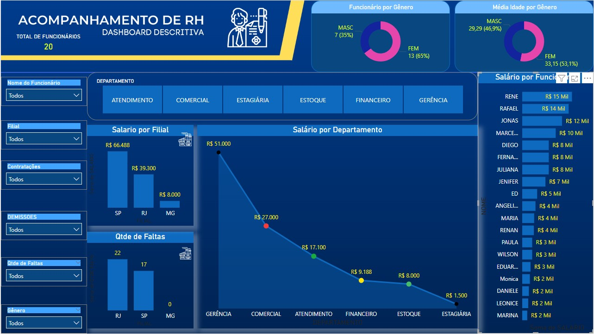

Projetos:
Alguns projetos desenvovidos
Alguns projetos desenvovidos
Desenvolvido no curso SENAC, realizei conforme o professor orientou.
Realizei algumas melhorias no projeto anterior realizado no curso, aplicando efeitos visuais de acordo com o meu gosto, para tentar fazer algo diferente que chamasse atenção.
Visualizar
Visualizar Site
Criei um modelo responsivo com informações sobre o que faz um gestor de TI
Visualizar Site
Excel foi utilizado para coleta e organização dos dados dos funcionários.
Foi criado um Dashbord interativo para melhor visualização das informações.
O PowerBI ajudou a visualizar as informações do RH de forma mais clara e dinâmica, permitindo que as partes interessadas explorassem os dados com maior facilidade, aplicando filtros e segmentações.
Possui duas planilhas de excel tem como objetivo gerenciar e acompanhar as informações de clientes e as distâncias percorridas pelos veículos locados.

O objetivo do projeto é gerenciar e monitorar a locação de veículos, mantendo um controle eficiente dos clientes e do uso dos veículos. O projeto visa fornecer insights sobre a quilometragem percorrida, o histórico de locação e os padrões de uso dos veículos para otimizar a operação e facilitar a tomada de decisões.